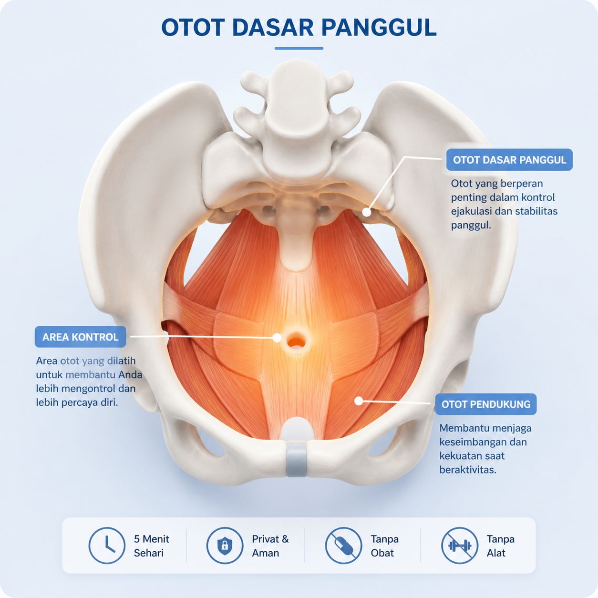

Sering Terlalu Cepat?
Latih Otot "Rem" Pria
Cukup 5 Menit Sehari
.gif)
Panduan latihan untuk membantu pria melatih kontrol ejakulasi secara natural — tanpa obat, tanpa alat, dan bisa dilakukan diam-diam di rumah.
Akses e-book + video. Cocok untuk pemula.
Baru mulai sudah ingin selesai.
Makin ditahan, makin panik.
Alih-alih menikmati, kepala penuh pikiran.
Masalahnya bukan lemah —
tapi belum dilatih.
Kuncinya Ada di
Otot Dasar Panggul

Otot ini berperan penting dalam kontrol saat berhubungan intim.
Banyak pria tidak sadar atau tidak pernah melatihnya — padahal seperti otot lain, ia bisa dilatih.
Deteksi otot yang benar
Banyak pria salah otot. Kami ajarkan cara menemukannya.
Ritme kontraksi & relaksasi
Kontrol bukan cuma menahan — tapi timing yang tepat.
Latihan bertahap
Tingkatkan kemampuan secara pelan dan konsisten.
Program Senam Kegel
Pria 5 Menit
Latihan sederhana di rumah. Tanpa alat, tanpa obat — cukup 5 menit sehari.
Pendekatan yang
Sudah Dikenal Luas
Senam Kegel dikenal luas sebagai metode untuk memperkuat otot dasar panggul pada pria.
Dengan latihan yang konsisten, metode ini dapat membantu meningkatkan awareness dan kontrol tubuh.
"Awalnya bingung otot mana yang harus dipakai. Setelah ikut video-nya, baru paham. Sekarang lebih tenang dan sadar tubuh sendiri."
— R, 34 tahun
"5 menit itu ringan banget, jadi konsisten. Belum sempurna, tapi rasa paniknya berkurang banyak."
— D, 29 tahun
"Yang saya suka, ini privat. Nggak perlu cerita ke siapa-siapa. E-book-nya jelas dan nggak memalukan."
— A, 41 tahun
Dengan Latihan Konsisten,
Anda Bisa Merasakan:
Hasil tiap orang bisa berbeda tergantung konsistensi latihan.
Mulai Latihan Hari Ini
Akses langsung dari HP. Privat, tanpa seorang pun tahu.
Garansi 30 Hari
Ikuti program dan isi checklist latihan. Jika setelah 30 hari Anda tidak merasakan manfaat sama sekali, hubungi kami untuk pengembalian dana penuh.
Pertanyaan Umum
Anda tidak perlu terus
mengandalkan "menahan".
Mulai dari latihan kecil
5 menit sehari.
Rp89.000 · Akses instan · Garansi 30 hari